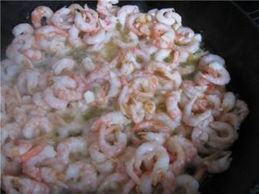
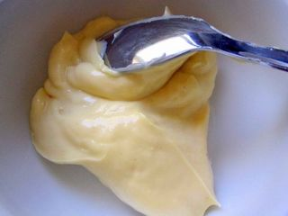

Шаг 1: Подготавливаем и измельчаем ингредиенты для салата.

Картофель нужно хорошо промыть под холодной проточной водой, затем сложить в кастрюлю, подходящего размера, залить доверху водой, немного подсолить и поставить вариться на средний огонь. Когда картофель закипит, снимите образовавшуюся пену и немного ослабьте огонь. Варите до полной готовности, которую можно проверить при помощи вилки или ножа. Просто проткните столовым предметом клубень и, если он легко проходит, значит, картофель готов. Слейте воду, остудите клубни и потом очистите их от кожуры. Натрите на крупной терке и пока отложите в сторону.
Куриные яйца сложите в кастрюлю, залейте полностью водой, добавьте щепотку соли и поставьте вариться на сильный огонь, а когда вода закипит, ослабьте пламя и варите их не менее 8 минут. Затем поставьте яйца под холодную проточную воду, остужаться. Очистите от скорлупы и также как картофель натрите на крупной терке, отложите в сторону.
Теперь в чистую кастрюлю налейте примерно 2-2,5 воды, подсолите, добавьте перца горошком и лавровый лист, поставьте на сильный огонь, доведите до кипения. Когда закипит вода, добавляйте в кастрюлю очищенные креветки, варите на среднем огне, примерно минут 5. Если всё же используете, креветки в панцире, то очищайте их уже после приготовления. Каждую уже отварную и очищенную креветку разрежьте пополам.
Шаг 2: Укладываем ингредиенты слоями в салатнице.

Дно сервировочной салатницы смажьте слоем майонеза. На него выложите половину, от общего количества измельченных креветок. Вновь промажьте слой майонезом. Далее выкладывайте слои в следующей последовательности: картофель + майонез, яйца + майонез, вторая половина креветок + майонез. Каждый слой старайтесь укладывать равномерно. Распределять и фиксировать его можно при помощи столовой ложки. Сверху всего этого выложите сплошным слоем икру.
Теперь салат необходимо накрыть сверху тарелкой или крышкой и убрать в холодильник, минимум на 6 часов (можно на всю ночь), чтобы он, как положено, успел пропитаться.